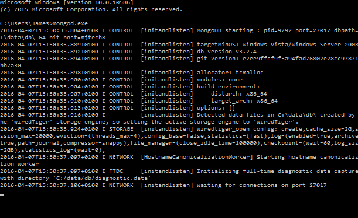
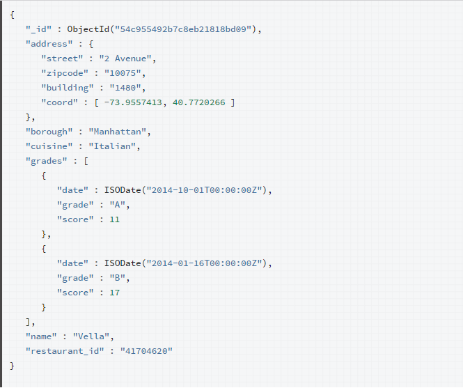
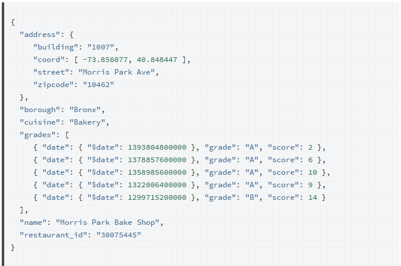
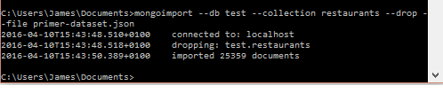
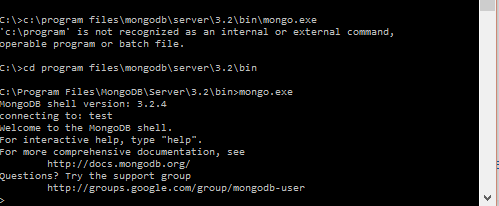
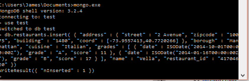
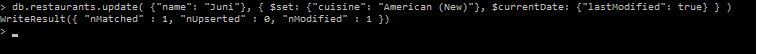

This lab will get you to download, install and use a document database called MongoDB.
Go to the following website and download the correct version for your computer:
Once downloaded install the mongodb package. It usually installs either directly in the c drive or in the program files in the c drive.
Open a command prompt and navigate to the location of mongo on your computer.
create a data directory to store all data.
md \data\dbTo start MongoDB run mongod.exe

This starts the main MongoDB database process. The waiting for connection message in the console window indicates that the mongod.exe process is running successfully
Depending on the security level of your system, Windows may pop up a Security Alert box about blocking some features. You should select Private Networks and click Allow access.
There are a number of guides available online for various editions of mongodb
https://docs.mongodb.org/manual/#getting-started
We will use the shell edition.
A record in MongoDB is a document, which is a data structure composed of field and value pairs, MongoDB documents are similar to JSON objects. The values of fields may include other documents, arrays and arrays of documents.

MongoDB stores documents in collections. Collections are analogous to tables in relational databases, although unlike a table, however, a collection does not require its documents to have the same schema.
In MongoDB, documents stored in a collection must have a unique_id field that acts as a primary key.
The examples used will be for the restaurants collection in the test database.
The following is a sample document in the restaurants collection:

To import the data you must have a running mongod instance.
Retrieve the dataset from
https://raw.githubusercontent.com/mongodb/docs-assets/primer-dataset/primer-dataset.json
and save to a file named primer.dataset.json
Next in the command prompt navigate to where you saved the json file. Then use mongoimport to insert the documents into the restaurants collection in the test database. If the collection already exists in the test database the operation will drop the restaurants colleciton first. run the following line of code:
mongoimport --db test --collection restaurants --drop --file primer-dataset.json
The mongo shell is an interactive JavaScrip interface to MongoDB and is a component of the Mongo package. You can use the mongo shell to query and update data as well as perform administrative operations.
Ensure that MongoDB is running before attempting to launch the mongo shell.
Open another terminal window or command prompt and run the mongo shell by typing mongo.exe on windows.

On the other command prompt screen you should see the sucessful connection.
When you run mongo without any arguments, the mongo shell will attempt to connect to the MongoDB instance running on the localhost interface on port 27017
Type help in the mongo shell for a list of available commands and their descriptions.
The mongo shell also provides <tab> key completion as well as known shortcuts similar to the bash shell. For example you can use the <up-arrow> and <down-arrow> to retrieve operations from its history.
You can use the insert() method to add documents to a collection in MongoDB. If you attempt to add documents to a collection that does not exist, MongoDB will create the collection for you.
In the mongo shell connected to your running modgod instance, switch to the test database.
use testInsert a document into a collection named restaurants.
db.restaurants.insert(
{
"address" : {
"street" : "2 Avenue",
"zipcode" : "10075",
"building" : "1480",
"coord" : [ -73.9557413, 40.7720266]
},
"borough" : "Manhattan",
"cuisine" : "Italian",
"grades" : [
{
"date" : ISODate("2014-10-01T00:00:00Z"),
"grade" : "A",
"score" : 11
},
{
"date" : ISODate("2014-01-16T00:00:00Z"),
"grade" : "B",
"score" : 17
}
],
"name" : "Vella",
"restaurant_id" : "41704620"
}
)This method returns a WriteResult object with the status of the operation.

WriteResult({"nInserted" : 1})If the document passed to the insert() method does not contain the _id field, the mongo shell automatically adds the field to the document and sets the field's value to a generated ObjectId.
You can use the find() method to issue a query to retrieve data from a collection in MongoDB. All queries in MongoDB have the scope of a single collection.
Queries can return all documents in a collection or only the documents that match a specified filter or criteria. You can specify the filter or criteria in a document and pass as a parameter to the find() method.
The find() method returns query results in a curso, which is an iterable object that yields documents.
db.restaurants.find()The query condition for an equality match on a field has the following form:
{ <filed1>: <value1>, <field2>: <value2>, ...}If the
If the
The following operation finds documents whose borough field equals "Manhattan".
db.restaurants.find({"borough": "Manhattan"})To specify a condition on a field within an embedded document, use the dot notation. Dot notation requires quotes around the whole dotted field name. The following operation specified an equality condition on the zipcode field in the address embedded document.
db.restaurants.find({"address.zipcode": "10075"})The result set includes only the matching documents.
The grades array contains embedded documents as its elements. To specify a condition on a field in these documents, use the dot notation. Dot notation requires quotes around the whole dotted field name. the following queries for documetns whose grades array contains an embedded document with a field grade equal to "B"
db.restaurants.find){"grades.grade": "B"})The result set includes only the matching documents.
Specify conditions with operators:
MongoDB provides operators to specify query conditions, such as comparison operators.
{<field>: {<operator1>: <value1>}}Example:
Query for documents whose grades array contains an embedded document with a field score greater than 30.
db.restaurants.find( {"grades.score": { $gt: 30}})for a complete list of the operators, see:
https://docs.mongodb.org/manual/reference/operator/query/
Combing conditions:
You can specify a logical conjunction (AND) for a list of query conditions by separating the conditions with a comman in the conditions document.
db.restaurants.find( {"cuisine": "Italian", "address.zipcode": "10075"})Logical OR:
Use the $or query operator:
db.restaurants.find(
{ $or: [ { "cuisine": "Italian" }, { "address.zipcode": "10075" } ] }
)Sort Query Results:
To specify an order for the result set, appeand the sort() method to the query. Pass to the sort() method a document which contains the field(s) to sort by and the corresponding sort type. E.g. 1 for ascending and -1 for descending.
For example, the following operation returns all documents in the restaurants collectioin, sorted first by the borough filed in ascending order, and then, within each borough, by the addess.zipcode field in ascending order.
db.restaurants.find().sort( {"borough": 1, "address.zipcode": 1})You can use the update() method to update documents of a colleciton. The method accepts as its parameters:
To specify the filter, use the same structure and syntax as the query conditions. By default, the update() method updates a single document. Use the multi option to update all documents that match the criteria.
You cannot update the _id field.
To change a field value, MongoDB provides update operators, such as $set to modify values. Some update operators, such as $set, will create the field if the field does not exist. See the individual update operators reference:
http://docs.mongodb.org/manual/reference/operator/update
Update Top-Level Fields
The following operation updates the first document with name equal to "Juni", using the $set operator to update the cuisine field and the $currentDate operator to update the lastModified field with the current date.
db.restaurants.update(
{ "name" : "Juni" },
{
$set: { "cuisine": "American (New)" },
$currentDate: { "lastModified": true }
}
)The update operation returns a WriteResult object which contains the status of the operation.

Update an Embedded Field
To update a field within an embedded document, use the dot notation. When using the dot notation, enclose the whole dotted field name in quotes. The following updates the street field in the embedded address document.
db.restaurants.update(
{ "restaurant_id" : "41156888" },
{ $set: { "address.street": "East 31st Street" } }
)The update operation returns a WriteResult object which contains the status of the operation.
Update Multiple Documents
By default, the update() method updates a single document. To update multiple documents, use the multi option in the update() method. The following operation updates all documents that have address.zipcode field equal to "10016" and cuisine field equal to "Other", setting the cuisine field to "Category To Be Determined" and the lastModified field to the current date.
db.restaurants.update(
{ "address.zipcode": "10016", cuisine: "Other" },
{
$set: { cuisine: "Category To Be Determined" },
$currentDate: { "lastModified": true }
},
{ multi: true}
)The update operation returns a WriteResult object which contains the status of the operation.
Replace a Document
To replace the entire document except for the _id field, pass an entirely new document as the second argument to the update() method. The replacement document can have different fields from the original document. In the replacement document, you can omit the _id field since the _id field is immutable. If you do include the _id field, it must be the same value as the existing value.
IMPORTANT After the update, the document only contains the field or fields in the replacement document. After the following update, the modified document will only contain the _id field, name field, the address field. i.e. the document will not contain the restaurant_id, cuisine, grades, and the borough fields.
db.restaurants.update(
{ "restaurant_id" : "41704620" },
{
"name" : "Vella 2",
"address" : {
"coord" : [ -73.9557413, 40.7720266 ],
"building" : "1480",
"street" : "2 Avenue",
"zipcode" : "10075"
}
}
)The update operation returns a WriteResult object which contains the status of the operation.
Additional Information
If no document matches the update condition, the default behavior of the update method is to do nothing. By specifying the upsert option to true, the update operation either updates matching document(s) or inserts a new document if no matching document exists. In the MongoDB Manual, see update().
https://docs.mongodb.org/manual/reference/method/db.collection.update/#db.collection.update
In MongoDB, write operations are atomic on the level of a single document. If a single update operation modifies multiple documents of a collection, the operation can interleave with other write operations on that collection. In the MongoDB Manual, see Atomicity.
You can use the remove() method to remove documents from a collection. The method takes a conditions document that determines the documents to remove.
To specify a remove condition, use the same structure and syntax as the query conditions.
The following operation removes all documents that match the specified condition.
db.restaurants.remove(
{ "borough": "Manhattan" } )The remove operation returns a WriteResult object which contains the status of the operation. nRemoved field specifies the number of documents removed.
By default, the remove() method removes all documents that match the remove condition. Use the justOne option to limit the remove operation to only one of the matching documents.
db.restaurants.remove(
{ "borough": "Queens" }, { justOne: true }
)Successful operation should return the following WriteResult object.
WriteResult({ "nRemoved" : 1 })nRemoved field specifies the number of documents removed, in this case 1.
To remove all documents from a collection, pass an empty conditions document {} to the remove() method.
db.restaurants.remove( { } )The remove operation returns a WriteResult object which contains the status of the operation. nRemoved field specifies the number of documents removed.
The remove all operation only removes the documents from the collection. The collection itself, as well as any indexes for the collection, remain. To remove all documents from a collection, it may be more efficient to drop the entire collection, including the indexes, and then recreate the collection and rebuild the indexes. You can usse the drop() method to drop a collection, including any indexes. No need to test this as you would have to re-import your restaurants collection again.
db.restaurants.drop()Upon successful drop of the collection, the operation returns true.
trueIf you do drop the collection your can re-import If the collection to drop does not exist, the operation will return false.